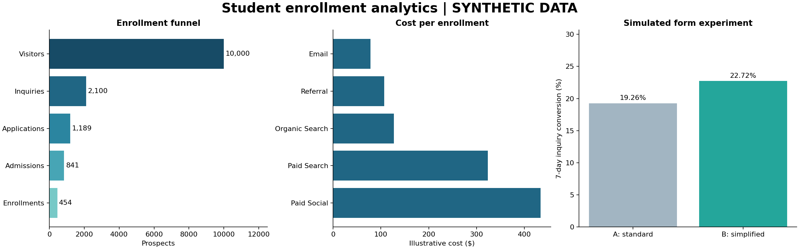
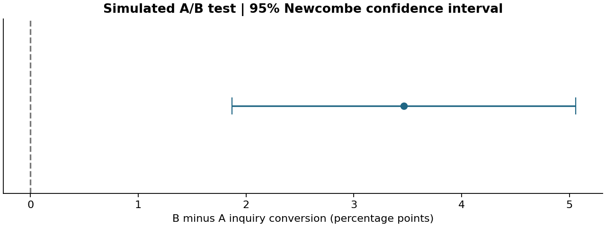

INDEPENDENT CASE STUDY · SYNTHETIC DATA
From first visit to enrollment
Marketing funnel performance and a simulated randomized form experiment. Acquisition: January–June 2025; 90-day follow-up.
Visitors10,000
Enrollments454
Enrollment rate4.54%
Cost / enrollment$208.72

Does a simpler form improve inquiries?
Form B: 22.72%; form A: 19.26%. Difference: 3.46 percentage points (18.0% relative). 95% interval: 1.87 to 5.06 points. Two-sided p=0.00002.

Channel economics
|
spend |
visitors |
inquiries |
enrollments |
cost_per_enrollment |
| channel |
|
|
|
|
|
| Email |
8204.40 |
1300 |
349 |
105 |
78.14 |
| Organic Search |
14344.64 |
2240 |
509 |
113 |
126.94 |
| Paid Search |
39835.72 |
2907 |
616 |
123 |
323.87 |
| Paid Social |
26917.66 |
2537 |
404 |
62 |
434.16 |
| Referral |
5457.62 |
1016 |
222 |
51 |
107.01 |
What to do next
Investigate visitor-to-inquiry friction. In a real setting, validate the form with a randomized test and enrollment-quality guardrails. Compare channels using incremental impact before changing budgets.
Model quality
Held-out ROC AUC 0.631; average precision 0.079; enrollment prevalence 0.046. Brier score 0.0431, versus baseline 0.0435. The model has limited discrimination and is a baseline, not a deployed decision system.
Read this honestly
All prospects and costs are fabricated. A treatment effect is intentionally encoded in the generator. These results demonstrate analytical methods and are not measured business impact. This is a static Python report; a Tableau workbook/publication remains to be authored.
Business brief · Tableau build guide · Methods and reproduction